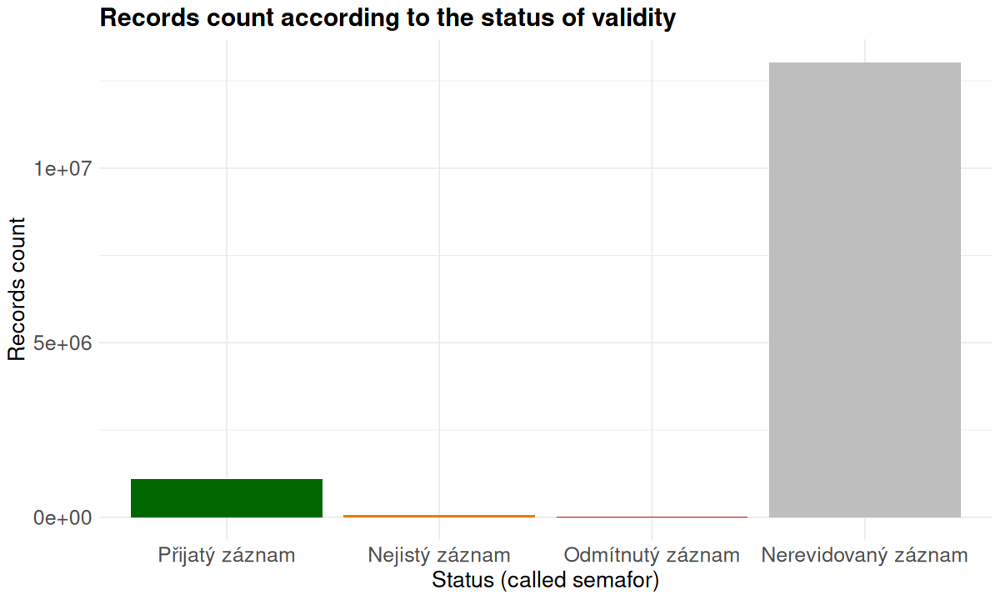

2.2 Occurrence data
The main amount of the records is comming from individual external data providers in the Czech Republic (Pladias as a secondary resource), only minority is imported to the Pladias as a primary storage.
| project | name | count |
|---|---|---|
| Nálezová databáze ochrany přírody | Agentura ochrany přírody a krajiny ČR | 16632157 |
| Česká národní fytocenologická databáze | Masarykova univerzita | 2053011 |
| Floristická dokumentace | Botanický ústav AV ČR, v. v. i. | 1641901 |
| Excerpce pro Atlas | Botanický ústav AV ČR, v. v. i. | 987711 |
| Databáze lesnické typologie | Ústav pro hospodářskou úpravu lesů | 969759 |
| Květena východních Čech | Zdeněk Kaplan | 227875 |
| Floristické kurzy ČBS | Česká botanická společnost | 210242 |
| Slavíkovy zaškrtávací formuláře | Botanický ústav AV ČR, v. v. i. | 136450 |
| Nálezová databáze Jihočeské pobočky ČBS | Jihočeská pobočka ČBS | 129385 |
| Excerpce floristické literatury | Zdeněk Kaplan | 75298 |
| Květena Brna | Zdeňka Lososová | 68986 |
| Nálezová databáze Moravskoslezské pobočky ČBS | Moravskoslezská pobočka ČBS | 65517 |
| Flóra Ještědského hřbetu | Petr Petřík | 58391 |
| Slavíkův floristický archiv | Botanický ústav AV ČR, v. v. i. | 56689 |
| Cross-border plants CZ-AT | Milan Štech | 41838 |
| Databáze rostlin kraje Vysočina | Libor Ekrt | 28603 |
| Flóra Šumavy | Milan Štech | 21668 |
| Nálezová databáze Moravskoslezská | Nálezová databáze Moravskoslezská | 6720 |
2.2.1 Validity status
For description of the record validity, a four-level classification is used (so called “semafor”). Using priority, the final interpretation of the occurrence status for taxon-quadrant is derived.
| name | count | priority | color_code |
|---|---|---|---|
| Přijatý záznam | 1124852 | 3 | |
| Nejistý záznam | 72251 | 2 | |
| Odmítnutý záznam | 22833 | 1 | |
| Nerevidovaný záznam | 22192265 | 0 |

2.2.2 Native status
| name | count | priority |
|---|---|---|
| původní | 13682 | 1 |
| nepůvodní | 6802 | 2 |
| pěstovaný | 3488 | 3 |
| neurčeno | 23388229 | 4 |

2.2.3 Copyright
There are multiple record licence options available as shown in the table. In the near future, we will transfer P-P-P records to CC-BY-4.0.
| id | key | description |
|---|---|---|
| 6 | CC-BY-SA | Creative Commons Attribution-ShareAlike 4.0 |
| 5 | CC-BY | Creative Commons — Attribution 4.0 International |
| 4 | P-N-N | neposkytovat záznamy třetím stranám a nezveřejnit na webu |
| 3 | P-N-P | neposkytovat záznamy třetím stranám ale zveřejnit na webu |
| 2 | P-P-N | poskytovat záznamy třetím stranám ale nezveřejnit na webu |
| 1 | P-P-P | poskytovat záznamy třetím stranám a zveřejnit na webu |
| key | description | count |
|---|---|---|
| CC-BY | Creative Commons — Attribution 4.0 International | 48160 |
| P-N-N | neposkytovat záznamy třetím stranám a nezveřejnit na webu | 28 |
| P-P-P | poskytovat záznamy třetím stranám a zveřejnit na webu | 23364013 |